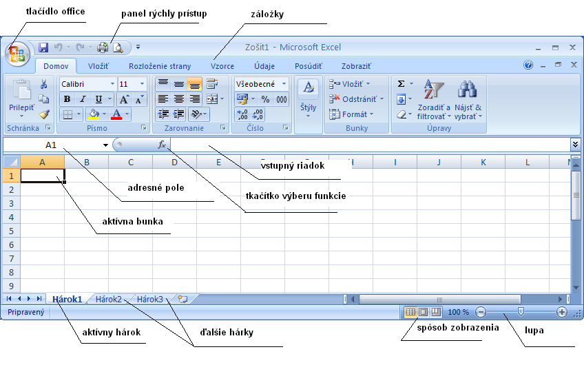
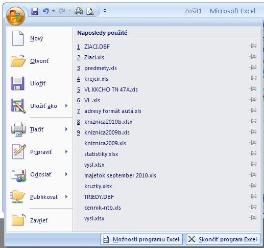
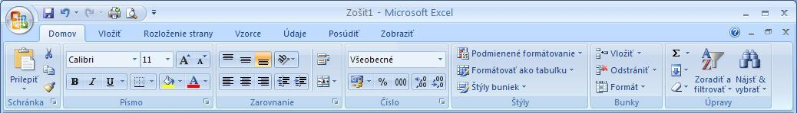
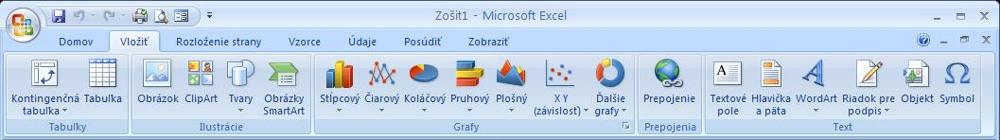
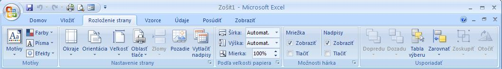

Excel - popis
- Popis okna aplikácie
- 
Na Slovensku patrí MS Office k najviac pou�ívanım kancelárskym balíkom a v tomto balíku má
Excel (nástroj pre prácu s tabu¾kami) dominantné postavenie. Program Excel má dlhú tradíciu - pod OS Windows
existuje od roku 1989. Za éru svojho trvania prešiel viacerımi zmenami a posledná vıznamná zmena prišla s verziou
Office 2007. Microsoft upustil od be�ného vzh¾adu ve¾kej väèšiny win aplikácií (rozba¾ovacie roletové menu)
a prišiel s nieèim novım systém zálo�iek- skupiny ponúk. Táto zmena má svojich zastáncov ako aj odporcov,
èo však treba poveda�, �e èlovek znalı práce v predošlıch verziách je spoèiatku v tomto novom systéme dos� stratenı.
Asi hlavná vıhoda oproti roletám, je �e po kliknutí ved¾a sa ponuka nestratí ale zostávba k dispozícii pre ïalšiu prácu.
Oproti verzii 2003 pribudlo aj znaèné mno�stvo nástrojov.
- Tlaèidlo office
- Nachádza sa na ¾avej hornej èasti okno (viï obr.1), tu mô�eme súbory otvára�, uklada�, tlaèi� a nastavova� im základné vlastnosti,
tie� mô�me meni� vzh¾ad a funkcie/chovanie programu.

- Novı - Tu mô�me otvori� prázdny dokument alebo www stránku alebo niektorı z pripravenıch nadefinovanıch dokumentov (šablón).
Zo šablón sú asi najviac pou�ívané sú rôzne šablóny �ivotopisu.
- Otvori� - otvoríme niektorı z u�ívate¾om vytvorenıch dokumentov (resp. stiahnutıch z inıch zdrojov)
- Ulo�i� - otvorenı, aktuálny dokument sa pod tım istım menom zapíše
- Ulo�i� ako - zapíše pod inım menom. Tu je na mieste spomenú� ve¾mi dôle�itú vec oh¾adom ukladania dokumentov vo Worde 2007.
Štandardnou príponou Wordu bola po celé roky DOC. Vo Worde 2007 je to prípona DOCX. V praxi to znamená, �e pokia¾ ulo�íme
dokument v tomto novom formáte, tak u�ívate¾ pou�ívajúci predchádzajúcu verziu Wordu nebude môc� tento dokument otvori�.
Preto sa odporúèa súbory, ktoré posielame napr. ako prílohu mailu, uklada� do formátu predchádzajúcich verzií Wordu:
"Ulo�i� ako kompatibilné s verziami 97 - 2003"
- Tlaèi� - Prebehne tlaèovı dialóg, kde mô�me zvoli� a nastavi� tlaèiareò a potom súbor vytlaèi�
Pozri aj rıchla tlaè
- Pripravi� - tu mô�me nastavi� napr. základné vlastnosti dokumentu/súboru, hlavne ide o zadanie autora dokumentu
(�iak predíde "trápnej situácii", keï na odoslanom referáte vyuèujúcemu je ako autor uvedenı jeho spolu�iak.
- Odosla� - súbor mô�me odosla� napr. ako prílohu mailu
- Mo�nosti programu Word - tu mô�me nastavi� vzh¾ad resp. chovanie programu Word. Väèšina u�ívate¾ov sem nemusí :-), predíde problémom,
�e sa jeho word bude chova� inak ako ostatné.
- Panel rıchly prístup
- Sem si mô�me umiestni� akcie, ktoré èasto s dokumentom robíme a prepínanie a hladanie po�adovanej akcie by nás zdr�iavalo
odporúèa sa tu ma�
- Zapísa� súbor
- Undo
- Rıchla tlaè
- Uká�ka pred tlaèou
- Zálo�ky - Skupiny ponúk
- Ako u� bolo spomínané vyššie, rozba¾ovacie menu bolo v tejto verzii nahradené skupinami ponúk. Tieto ponuky sú zobrazené jednotlivımi zálo�kami Domov, Vlo�i�, Rozlo�enie strany, Vzorce, Údaje, Posúdi�, Zobrazi�
- Domov

Zálo�ka domov sa delí na sekcie, ka�dá sekcia má "vytipovanú" skupinu rıchlych tlaèítok, ktorá je zobrazená stále, ku ïalším sa mô�me dosta� stlaèením malej šipky
umiestnenej na ka�dej sekcii vpravo dole, kde sa nám v ponuke zobrazí dialógové okno, kde u� sú komplexné nástroje z tejto sekcie:
- schránka - tu mô�me robi� operácie nad schránkou - vkladanie (kopírovanie, vystrihnutie) objektu do schránky a vkladanie objektu zo
schránky do dokumentu.
Tie� je tu nástroj štetec, ktorım mô�me okopírova� formátovanie z jedného objektu (textu) na inı objekt (inı text)
- písmo - tu mô�me nastavova� vlastnosti písma tkz.
- dopredu - chceme zaèa� písa� s inım písmom ako doteraz
- spätne - máme oznaèenı blok textu a tomuto textu chceme zmeni� vlastnosti
viac pozri v kap. písmo
- Typ písma - ka�dı typ písma má svoje meno a my si mô�me vybra�
- Ve¾kos� písma - je zadané èíslom, prekvapením je �e mô�me voli� aj èíslo desatinné (Na �ahák sa pou�íva 4.5 :-) )
- Zväèšenie písma o 1 bod
- Zmenšenie písma o 1 bod
- Zrušenie všetkého pridaného formátovania - text však ostane
- B - písmo bude tuèné/hrubé
- I - písmo bude šikmé
- U - písmo bude podèiarknuté (šipkou si mô�me rozbali� ponuku typu podèiarknutia)
- Tlaèidko zvırazòovaèa
- Tlaèidko farby písma
- Zarovnanie
Vo vybranıch bunkách/aktívnej bunke tu mô�me rıchlo nastavi� zarovnávanie textu v bunke
- vertikálne zarovnanie - hore, stred, dole
- smer písma - rozba¾ovacia ponuka na šíkmé resp. zvislé písanie
- horizontálne zarovnanie - v¾avo, stred, vpravo
- povolenie/zakázanie viacriadkovej bunky
- spájanie buniek - spájanie oznaèenıch buniek do jednej, aj spätné oddelenie
Rozbalením ponuky zarovnania sa mo�no dosta� do dialógového okna vlastnosti bunky, známeho z verzie 2003
- Èíslo - presnejšie typ bunky
- Všeobecné - v tejto rozba¾ovacej ponuke mo�no nastavi� typ bunky (pozri typ bunky)
- Nastavenie meny - navolíme si znak meny
- Navolíme odde¾ovaè tisícov
- Urèíme poèet des. miest na vıpise
Rozbalením ponuky zarovnania sa mo�no dosta� do dialógového okna vlastnosti bunky, známeho z verzie 2003
- Štıly - šablóny vzh¾adu buniek a celého dokumentu
- Podmienené formátovanie - tu mo�no nastavi� vzh¾ad buniek pod¾a hodnôt
- Úpravy - umo�òuje nám to vyh¾adávanie nejakého textu, resp. hromadné opravy textu
- Vlo�i�

V tejto skupine príkazov sa nachádzajú všetky objekty, ktoré sa do dokumentu dajú vlo�i�.
Je to napríklad tabu¾ka, obrázky, kliparty, ale nachádzajú sa tu ak príkazy pre hlavièku a pätu,
pre vlo�enie textového po¾a, ale aj nemenej dôle�itıch symbolov, rovníc.
- Tabu¾ky - pozri kontingenèné tabu¾ky
- Ilustrácie
umo�ní vkladanie grafickıch objektov
- Obrázok - fotografie, nami nakreslené obrázky v inıch programoch
- ClipArt - "špeciálne" microsoft vektorové obrázky, rozdelené sú do kategórií
- Tvary - jednoduché 2D a 3D geometrické tvary, do krorıch sa dá aj vklada� text a rôzne sa dajú vyfarbova�
- SmartArt - nová kategória, tu sú rôzne diagramy, organizaèné schémy a pod.
- Grafy - umo�ní nám vykresli� po�adovanı graf
Tu si mo�no rıchlo zvoli� po�adovanı typ grafu (pozri grafy)
- Prepojenie
mô�me vklada� prepojenia na iné dokumenty, resp. na iné miesto tohoto dokumentu a tie� vklada� zálo�ky na ktoré je potom mo�né vytvára�
prepojenia. (prepojenie na konkrétne miesto dokumentu mo�no urobi� len ak je to miesto oznaèené zálo�kou)
- Text
Tu mô�me do tabu¾kového dokumentu vklada� textové prvky neviazané na �iadne bunky tabu¾ky
- Textové pole
- Hlavièka a päta - sú rovnaké texty navrchu resp. naspodu ka�dej (resp. nieko¾kıch) strany. Vo¾bou "èíslo strany" sa umo�ní zada� èíslovanie strán
- WordArt
- Riadok pre podpis
- Objekt
- Symbol - umo�ní do textu vlo�i� špeciálne znaky
- Rozlo�enie strany

- Motívy
Tieto vo¾by nám upravia celı dokument pod¾a jednotného vzh¾adu.Pou�itím motívu
(motív: skupina jednotnıch návrhovıch prvkov, ktoré zabezpeèujú vzh¾ad dokumentu prostredníctvom farieb, písiem a obrázkov.)
dokumentu mô�ete rıchlo a jednoducho formátova� celı dokument a docieli� tak profesionálny a modernı vzh¾ad.
Motív dokumentu predstavuje mno�inu mo�ností formátovania, ktorá zahàòa mno�inu farieb motívu, mno�inu písiem motívu
(vrátane písiem nadpisov a základného textu) a mno�inu efektov motívu (vrátane efektov èiar a vıplne). Programy, ako napríklad Microsoft Office Word,
Excel a PowerPoint, poskytujú nieko¾ko preddefinovanıch motívov dokumentov.
Mô�ete však vytvori� aj vlastné motívy, prispôsobením existujúceho motívu dokumentu a jeho následnım ulo�ením ako vlastného motívu dokumentu.
Motívy dokumentov sú zdie¾ané programami balíka Office, tak�e všetky vaše dokumenty balíka Office mô�u ma� rovnakı a jednotnı vzh¾ad.
- Nastavenie strany
- Okraje - mô�me vybra� viaceré preddefinované alebo zadáme vlastné
- Orientácia - navolíme papier na vıšku resp. šírku
- Ve¾kos� - zadáme ve¾kos� papiera na ktorı budeme dokument tlaèi� (mo�no hocikedy meni�)
- Zlomy - tu mô�me zada� pevné zlomy strán
- Pozadie - Mô�me do hárku prida� obrázok do pozadia (vytlaèenı ale nebude)
- Vytlaèi� nadpisy - tu mô�me urèi� riadky, ktoré budú vytlaèené na ka�dej strane
- Pod¾a ve¾kosti papiera
- Šírka - mô�me urèi� ko¾ko strán sa má zmesti� na šírku papiera
- Vıška - mô�me urèi� ko¾ko strán sa má zmesti� na vıšku papiera
- Mierka - mô�me tlaè zmenši�
- Mo�nosti hárka
- Vzorce
- Tu mo�no vybera� vkladané funkcie. Funkcie sú rozdelené do kategórií. Tie� mô�me urèi�, kedy sa vzorce majú prepoèíta�
automaticky - prepoèítanie sa robí po ka�dej zmene údajov
manuálne - stlaèením klávesy F9
- Údaje
- Tu sú nástroje na získanie dát z inıch aplikácií alebo pripoji� údaje z inıch aplikácií do tohoto hárku.
Tie� sú tu nástroje na zoradenie dát v tabu¾ke pod¾a jedného prípadne viacerıch ståpcov, tie� mo�no pou�i� na
tabu¾ku filter.
- Zobrazi�
- Umo�òuje meni� poh¾ad na tvorenı dokument
- Zobrazenia zošitov - tu zvolíme spôsob zobrazenia
- Zobrazenie alebo skrytie - tu si volíme, èi chceme vidie� pomocné prostriedky ako sú pravítko alebo mrie�ka alebo miniatúry
- Lupa - dokument si cez lupu mô�me priblí�i� (väèšie písmenká) alebo vzdiali� (vidíme väèšiu èas�)
- Okno - Umo�òuje nám ma� dokument otvorenı vo viacerıch oknách